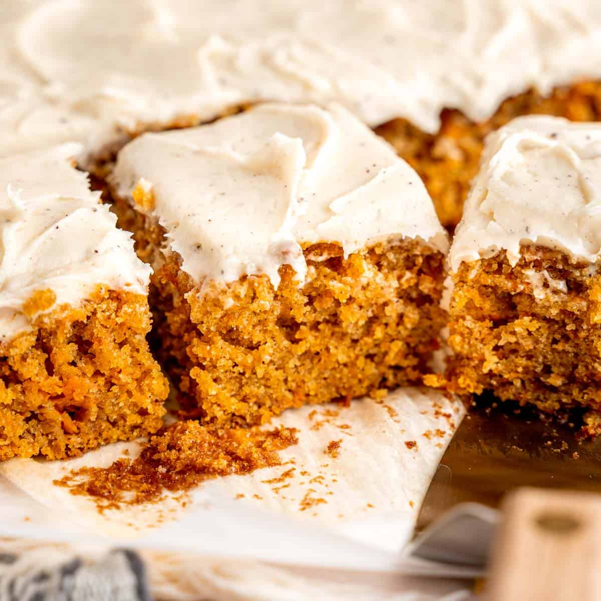

Spiced Carrot Cake

Description
There is nothing quite like the warm flavours of a spiced carrot cake to satisfy those sweet cravings in the fall. This may very well be the best carrot cake you have ever baked and eaten. Guaranteed to impress anyone you make it for!
Ingredients
Carrot Cake
- 2 1/4 cups all-purpose flour
- 1 teaspoon baking powder
- 1 1/2 teaspoon baking soda
- 1 teaspoon salt
- 2 1/2 teaspoons ground cinnamon
- 3/4 teaspoon ground nutmeg
- 3/4 teaspoon ground cloves
- 1/4 teaspoon ground cardamom
- 1 1/2 cups light brown sugar packed
- 1/2 cup granulated sugar
- 1 cup canola oil
- 4 large eggs, room temperature
- 1 teaspoon vanilla extract
- 1/4 cup sour cream, room temperature
- 1/4 cup applesauce, room temperature
- 3 cups shredded carrots
Brown Butter Cream Cheese Frosting
- 1/2 cup unsalted butter, browned and cooled
- 8 oz cream cheese, room temperature
- 1 teaspoon vanilla extract
- 4 cups powdered sugar
Steps/Instructions
Carrot Cake
- Preheat oven to 325°F and line a 9x13" cake pan with parchment paper (covering the sides).
- In a medium bowl, whisk together the flour, baking powder, baking soda, salt and spices. Set aside.
- In a large bowl, whisk together the sugars and oil. Add the eggs, vanilla, sour cream, and applesauce, mixing well after each addition.
- Sift and fold the flour mixture into the wet ingredients just until a few dry streaks are visible. Then, fold in the shredded carrots.
- Pour the batter into the prepared cake pan and bake for 40-50 minutes, or until a toothpick inserted in the middle comes out clean. Allow the cake to cool completely before frosting.
Brown Butter Cream Cheese Frosting
- Place the butter in a pan over medium heat. Stir until the butter browns and releases a nutty aroma. Let it cool.
- Mix the cream cheese in a large bowl. Stir in the cooled brown butter, vanilla, and powdered sugar until well combined.
- Spread an even layer of frosting over the cooled carrot cake. Cut into 24 pieces (or less for bigger slices) and enjoy!